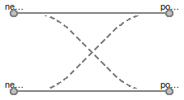

Table of Contents
- User's Guide
- BCs
- Sensors
- Assemblies
- Regions
- Subregions
- Connectors
- Characteristics
- Units
- Quantities
- BaseClasses
Download
- Latest: FCSys-2.0.zip (**Please check back soon or contact kdavies4 at gmail.com.)

| Name | Description |
|---|---|
| Examples and tests | |
| Adapters to Package Modelica | |
| Test stands | |
| BCs for the ChemicalBus connector | |
| BCs for the ChemicalOutput connector | |
| BCs for the InertAmagat connector | |
| BCs for the InertDalton connector | |
| BCs for a FaceBus connector | |
| BCs for a Face connector, e.g., of a Species model (single-species) | |
| BCs for a pair of FaceBus connectors | |
| BCs for a pair of Face connectors | |
| Router | Connect two pairs of faces to pass through or cross over |
| Environment | Environmental properties for a model |
| Base classes (not for direct use) |
 FCSys.BCs.Router
FCSys.BCs.Router
This model acts as a connection switch.
It has a single parameter, crossOver. If crossOver is
set to false, then
the router is in the pass-through mode.
In pass-through mode, shown by Figure 1a,
negative1 is connected to positive1 and negative2
is connected to positive2.
If crossOver is set to true, then the router is in cross-over mode.
In cross-over mode, shown by Figure 1b, negative1 is connected to positive2
and negative2 is
connected to positive1. The only equations are
those generated by the model's connect statements.

a: Pass-through |

b: Cross-over |
| Figure 1: Modes of connection. | |
Extends from FCSys.BaseClasses.Icons.Names.Top3.
| Type | Name | Default | Description |
|---|---|---|---|
| Boolean | crossOver | false | Cross over (otherwise, pass through) |
| Type | Name | Description |
|---|---|---|
| FaceBus | negative1 | Negative face 1 |
| FaceBus | positive1 | Positive face 1 |
| FaceBus | negative2 | Negative face 2 |
| FaceBus | positive2 | Positive face 2 |
model Router "Connect two pairs of faces to pass through or cross over" extends FCSys.BaseClasses.Icons.Names.Top3; parameter Boolean crossOver=false "Cross over (otherwise, pass through)";FCSys.Connectors.FaceBus negative1 "Negative face 1"; FCSys.Connectors.FaceBus positive1 "Positive face 1"; FCSys.Connectors.FaceBus negative2 "Negative face 2"; FCSys.Connectors.FaceBus positive2 "Positive face 2"; equation if crossOver thenconnect(negative1, positive2); connect(negative2, positive1); else // Pass-throughconnect(negative1, positive1); connect(negative2, positive2); end if;end Router;
| Type | Name | Default | Description |
|---|---|---|---|
| Boolean | analysis | true | Include optional variables for analysis |
| PressureAbsolute | p | 1*U.atm | Pressure [m/(l.T2)] |
| TemperatureAbsolute | T | 298.15*U.K | Temperature |
| NumberAbsolute | RH | 1 | Relative humidity [1] |
| NumberAbsolute | x_O2_dry | 0.208 | Dry gas O2 fraction (yO2 dry) [1] |
| Acceleration | a[FCSys.BaseClasses.Axis] | zeros(3) | Acceleration of the reference frame [l/T2] |
record Environment "Environmental properties for a model" extends FCSys.BaseClasses.Icons.Names.Top3; // Store the values of the base constants and units. final constant U.Bases.Base base=U.base "Base constants and units"; parameter Boolean analysis=true "Include optional variables for analysis"; parameter Q.PressureAbsolute p(nominal=1*U.atm) = 1*U.atm "Pressure"; parameter Q.TemperatureAbsolute T(nominal=298.15*U.K) = 298.15*U.K "Temperature"; parameter Q.NumberAbsolute RH(displayUnit="%") = 1 "Relative humidity"; parameter Q.NumberAbsolute x_O2_dry( final max=1, displayUnit="%") = 0.208 "Dry gas O2 fraction (yO2 dry)"; // Value from http://en.wikipedia.org/wiki/Oxygen parameter Q.Acceleration a[FCSys.BaseClasses.Axis]=zeros(3) "Acceleration of the reference frame"; final parameter Q.NumberAbsolute x_H2O( final max=1, displayUnit="%") = 0.2 "Gas H2O fraction (yH2O)"; // TODO: Cast this in terms of relative humidity.end Environment;